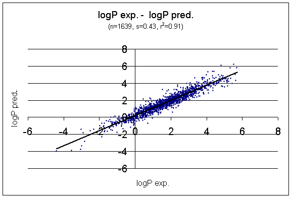

Test results of prediction tools
- Test of pKa prediction
- Test of logP prediction
- Test of average molecular polarizability prediction
- Test of 3D molecular polarizability prediction
- References
- Notes
1. Test of pKa prediction
pKa experimental1 vs. pKa predicted

Distribution of pKa estimation error

2. Test of logP prediction
logP experimental 2 vs. logP predicted

Distribution of logP estimation error

3. Test of average molecular polarizability prediction
Experimental 3 vs. predicted molecular polarizability

Experimental 3 and predicted data

4. Test of 3D1 molecular polarizability prediction
Experimental 4 vs. predicted molecular polarizability

Experimental 4 and predicted data

5. References
- PHYSPROP© DATABASE
- Klopman, G.; Li, Ju-Yun.; Wang, S.; Dimayuga, M.: J.Chem.Inf.Comput.Sci., 1994, 34, 752
- Miller, K. J.; Savchik, J. A.: J.Am.Chem.Soc., 1979, 101, 7206
- Piet Th. van Duijnen.; Swart, M.: J.Phys.Chem. A, 1998, 102, 2399
6. Notes
- 3D geometries of molecules were generated with Marvin.
Return to Top